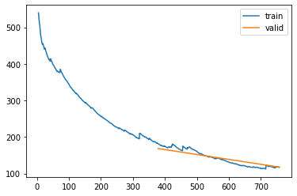
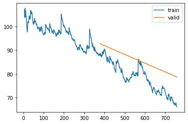
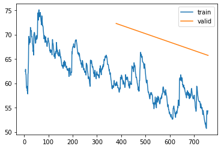
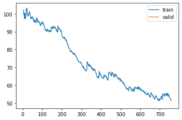

%load_ext autoreload
%autoreload 2Training Kalman Filter for Results - 8 Feb
from meteo_imp.kalman.fastai import *
from meteo_imp.kalman.filter import *
from meteo_imp.utils import *
from meteo_imp.data import *
from meteo_imp.gaussian import *
from fastai.tabular.learner import *
from fastai.learner import *
from fastai.callback.all import *
from fastcore.foundation import L
from fastcore.foundation import patch
from pathlib import Path, PosixPath
from meteo_imp.kalman.fastai import show_results
import pandas as pd
import numpy as np
import torch
import random
from pyprojroot import here
from sklearn.decomposition import PCA
from matplotlib import pyplot as pltreset_seed()haiB = pd.read_parquet(hai_big_path)
hai_eraB = pd.read_parquet(hai_era_big_path)list(haiB.columns)['TA', 'SW_IN', 'VPD', 'PA', 'P', 'WS', 'LW_IN']base = here("analysis/results/trained_8feb")base.mkdir(exist_ok=True)@patch
def add_end(self: PosixPath, end): return self.parent / (self.name + end)def train_or_load(model, dls, lr, n, path, keep=True):
save_models = SaveModelsBatch(times_epoch=5)
csv_logger = CSVLogger(path.add_end("log.csv"), append=True)
learn = Learner(dls, model, KalmanLoss(only_gap=True), cbs = [Float64Callback, save_models, csv_logger], metrics=rmse_gap)
items = random.choices(dls.valid.items, k=4)
if path.add_end(".pickle").exists() and keep:
learn.model = torch.load(path.add_end(".pickle"))
display(csv_logger.read_log())
plot = Image(filename=path.add_end("_loss_plot.png"))
display(plot)
# save_models = torch.load(path.add_end("_save_models.pickle"))
# learn = torch.load(path.add_end("_learn.pickle"))
else:
learn.fit(lr, n)
torch.save(learn.model, path.add_end(".pickle"))
plt.savefig(path.add_end("_loss_plot.png"))
# torch.save(save_models, path.add_end("_save_models.pickle"))
# torch.save(learn, path.add_end("_learn.pickle"))
learn.recorder.plot_loss()
return learn, items All variables - 30 varying
Model Av (All varying) all variables with a varing numbers of variables
dls_Av = imp_dataloader(haiB, hai_eraB, var_sel = gen_var_sel(list(haiB.columns)), block_len=120, gap_len=30, bs=20, control_lags=[1], n_rep=10).cpu()model_Av = KalmanFilterSR.init_local_slope_pca(len(haiB.columns),len(haiB.columns), df_pca = haiB, pred_only_gap=True, use_conditional=False)learn_Av, items_Av = train_or_load(model_Av, dls_Av, 2, 1e-3, base / "All_gap_varying_30_v1.pickle")show_results(learn_Av, items=items_Av, control_map=control_map)All variables - 30 all
dls_Aa = imp_dataloader(haiB, hai_eraB, var_sel = list(haiB.columns), block_len=120, gap_len=30, bs=20, control_lags=[1], n_rep=5).cpu()model_Aa = model_Av.copy()learn_Aa, items_Aa = train_or_load(model_Aa, dls_Aa, 2, 2e-4, base / "All_gap_all_30_v1.pickle")| epoch | train_loss | valid_loss | rmse_gap | time |
|---|---|---|---|---|
| 0 | 182.171239 | 168.446283 | 0.523671 | 13:10 |
| 1 | 117.279725 | 117.592085 | 0.498368 | 13:01 |

learn_Aa, items_Aa = train_or_load(model_Aa, dls_Aa, 2, 2e-4, base / "All_gap_all_30_v2.pickle")| epoch | train_loss | valid_loss | rmse_gap | time |
|---|---|---|---|---|
| 0 | 87.858628 | 92.736614 | 0.481275 | 13:27 |
| 1 | 66.078209 | 78.718438 | 0.466970 | 13:12 |

learn_Aa, save_models_Aa, items_Aa = train_or_load(model_Aa, dls_Aa, 2, 2e-4, base / "All_gap_all_30_v3.pickle")| epoch | train_loss | valid_loss | rmse_gap | time |
|---|---|---|---|---|
| 0 | 60.024272 | 72.281475 | 0.458281 | 13:22 |
| 1 | 54.344116 | 65.717688 | 0.448152 | 13:14 |

learn_Aa, items_Aa, csv_logger = train_or_load(model_Aa, dls_Aa, 2, 2e-4, base / "All_gap_all_30_v3.pickle")show_results(learn_Aa, items=items_Aa, control_map=control_map)/home/simone/anaconda3/envs/data-science/lib/python3.10/site-packages/fastai/callback/core.py:69: UserWarning: You are shadowing an attribute (__class__) that exists in the learner. Use `self.learn.__class__` to avoid this
warn(f"You are shadowing an attribute ({name}) that exists in the learner. Use `self.learn.{name}` to avoid this")[MeteoImpItem(i=1588, shift=-60, var_sel=['TA', 'SW_IN', 'VPD', 'PA', 'P', 'WS', 'LW_IN'], gap_len=30), MeteoImpItem(i=1863, shift=12, var_sel=['TA', 'SW_IN', 'VPD', 'PA', 'P', 'WS', 'LW_IN'], gap_len=30), MeteoImpItem(i=1704, shift=36, var_sel=['TA', 'SW_IN', 'VPD', 'PA', 'P', 'WS', 'LW_IN'], gap_len=30), MeteoImpItem(i=1545, shift=12, var_sel=['TA', 'SW_IN', 'VPD', 'PA', 'P', 'WS', 'LW_IN'], gap_len=30)]TA - 30
dls_TA = imp_dataloader(haiB, hai_eraB, var_sel = 'TA', block_len=120, gap_len=30, bs=20, control_lags=[1], n_rep=5).cpu()model_TA = model_Av.copy()learn_TA, save_models_TA, items_TA = train_or_load(model_TA, dls_TA, 2, 2e-4, base / "TA_30_v1.pickle")| epoch | train_loss | valid_loss | rmse_gap | time |
|---|---|---|---|---|
| 0 | -7.466947 | -10.199575 | 0.141733 | 11:02 |
| 1 | -18.349137 | -19.333264 | 0.104535 | 1:38:44 |

learn_TA, items_TA, loggerTA = train_or_load(model_TA, dls_TA, 1, 2e-4, base / "TA_30_v2.pickle")loggerTA.read_log()| epoch | train_loss | valid_loss | rmse_gap | time | |
|---|---|---|---|---|---|
| 0 | 0 | -22.20629 | -22.448926 | 0.097302 | 11:15 |
show_results(learn_TA, items=items_TA, control_map=control_map, hide_no_gap=True)TA - 96
Model TA
dls_TA96 = imp_dataloader(haiB, hai_eraB, var_sel = 'TA', block_len=350, gap_len=96, bs=20, control_lags=[1], n_rep=5).cpu()model_TA96 = model_TA.copy()learn_TA96, save_models_TA96, items_TA96 = train_or_load(model_TA96, dls_TA96, 2, 2e-4, base / "TA_96_v1.pickle")show_results(learn_TA96, items=items_TA96, control_map=control_map, hide_no_gap=True)SW_IN - 12
dls_SW_IN = imp_dataloader(haiB, hai_eraB, var_sel = 'SW_IN', block_len=100, gap_len=12, bs=20, control_lags=[1], n_rep=5).cpu()model_SW_IN = model_Av.copy()learn_SW_IN, save_models_SW_IN, items_SW_IN = train_or_load(model_SW_IN, dls_SW_IN, 2, 2e-4, base / "SW_IN_12_v1.pickle")show_results(learn_SW_IN, items=items_SW_IN, control_map=control_map, hide_no_gap=True)SW_IN - 96
Model SW_IN (All varying) all variables with a varing numbers of variables
dls_SW_IN96 = imp_dataloader(haiB, hai_eraB, var_sel = 'SW_IN', block_len=350, gap_len=96, bs=20, control_lags=[1], n_rep=5).cpu()model_SW_IN96 = model_SW_IN.copy()learn_SW_IN96, save_models_SW_IN96, items_SW_IN96 = train_or_load(model_SW_IN96, dls_SW_IN96, 2, 2e-4, base / "SW_IN_96_v1.pickle")show_results(learn_SW_IN96, items=items_SW_IN96, control_map=control_map, hide_no_gap=True)LW_IN - 12
dls_LW_IN = imp_dataloader(haiB, hai_eraB, var_sel = 'LW_IN', block_len=100, gap_len=12, bs=20, control_lags=[1], n_rep=5).cpu()model_LW_IN = model_Av.copy()learn_LW_IN, save_models_LW_IN, items_LW_IN = train_or_load(model_LW_IN, dls_LW_IN, 2, 2e-4, base / "LW_IN_12_v1.pickle")show_results(learn_LW_IN, items=items_LW_IN, control_map=control_map, hide_no_gap=True)LW_IN - 96
Model LW_IN (All varying) all variables with a varing numbers of variables
dls_LW_IN96 = imp_dataloader(haiB, hai_eraB, var_sel = 'LW_IN', block_len=350, gap_len=96, bs=20, control_lags=[1], n_rep=5).cpu()model_LW_IN96 = model_LW_IN.copy()learn_LW_IN96, save_models_LW_IN96, items_LW_IN96 = train_or_load(model_LW_IN96, dls_LW_IN96, 2, 2e-4, base / "LW_IN_96_v1.pickle")show_results(learn_LW_IN96, items=items_LW_IN96, control_map=control_map, hide_no_gap=True)No Control
All variables - 30 varying
Model Av_nc (All varying) all variables with a varing numbers of variables
dls_Av_nc = imp_dataloader(haiB,
control = hai_eraB.sample(frac=1).reset_index(drop=True).set_index(hai_eraB.index), #reshuffle so cannot use control
var_sel = gen_var_sel(list(haiB.columns)), block_len=120, gap_len=30, bs=20, control_lags=[1], n_rep=10).cpu()model_Av_nc = model_Av.copy()
model_Av_nc.use_control = Falselearn_Av_nc, items_Av_nc = train_or_load(model_Av_nc, dls_Av_nc, 1, 5e-4, base / "All_gap_varying_30_no_control_v1.pickle")| epoch | train_loss | valid_loss | rmse_gap | time |
|---|---|---|---|---|
| 0 | 51.306504 | 49.708980 | 0.438821 | 36:44 |
ValueError: too many values to unpack (expected 2)
learn_Av_nc, items_Av_nc = train_or_load(model_Av_nc, dls_Av_nc, 1, 1e-3, base / "All_gap_varying_30_no_control_v2.pickle")
0.00% [0/1 00:00<?]
| epoch | train_loss | valid_loss | rmse_gap | time |
|---|
99.08% [751/758 33:55<00:18 34.4206]
show_results(learn_Av_nc, items=items_Av_nc, control_map=control_map)